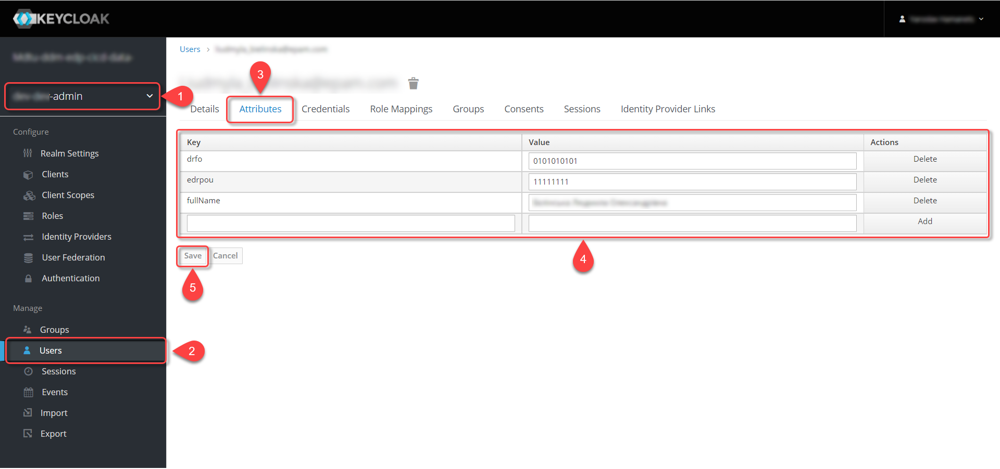
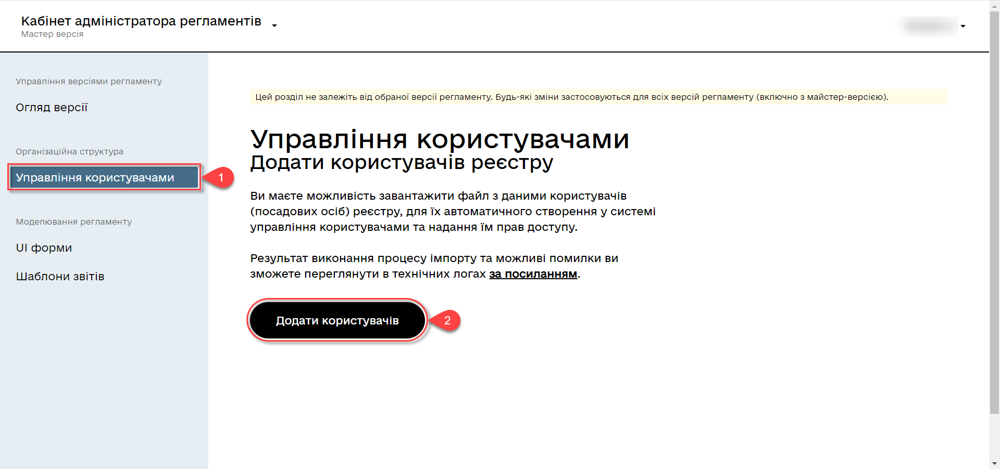
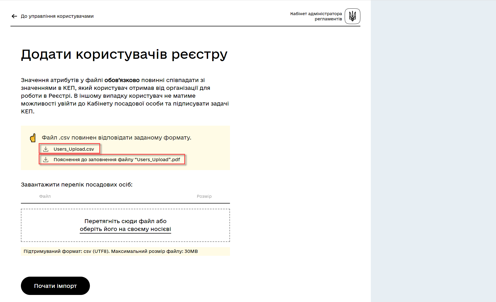
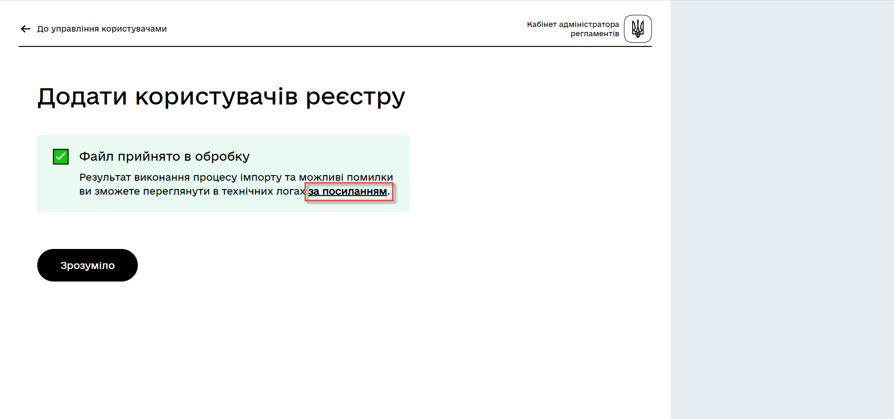
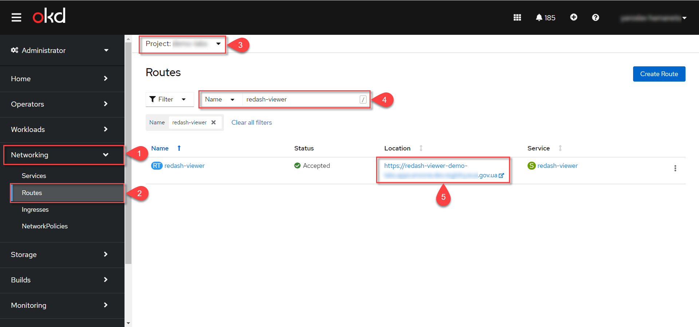
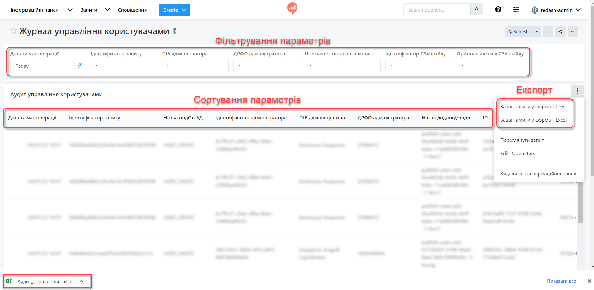

Importing users through a file and granting access rights
1. General description
To simplify the creation of a large number of users (officers) in Keycloak, the functionality to load a list of users into the system using a file has been implemented.
A new page called User management has been added to the Regulations administrator portal. You can upload a file with user data for this registry there.
To minimize errors when creating new users, preliminary validation rules have been introduced for the file (size, format, encoding).
To meet the security and data storage reliability requirements, the file is encrypted and stored in the object storage of the registry (Ceph).
All subsequent steps for initiating the user import process in Keycloak, parsing and validating user data from the file, processing data in the file, and creating users in Keycloak are performed automatically without the involvement of the registry administrator.
To monitor the execution process and its results, functionality has been implemented in the Kibana logging service. The registry administrator can view information about the processed file and the summary result, including the number of processed records, successful imports, erroneous imports, as well as detailed information for each erroneous record.
Additionally, based on the developed System event log in Redash, a new log called User management log has been created separately. In the User management log, the registry administrator can see actions related to the creation of users in Keycloak, including information about imports through a file.
2. Configuring administrator attributes in Keycloak
Before proceeding, the following actions need to be performed once in Keycloak:
-
Go to the corresponding
-adminrealm in Keycloak and select theUserssection. -
Choose the administrator user who will import the file and go to the
Attributessection. -
Create three keys for the attributes:
-
fullName— Full name; -
drfo — The personal registration number of the taxpayer’s account card.
-
edrpou- The unique identification number of the legal entity in the Unified state register of enterprises and organizations of Ukraine.
-
-
Click
Save.
|
|
The configuration of attributes in Keycloak is performed once. There is no need to repeat it during subsequent user import procedures. |
3. Importing users through the Regulations administrator portal
-
Go to the Regulations administrator portal.
You can obtain the link to the Regulations administrator portal of the corresponding registry in Openshift. To do this, go to the
Networking→Routes menu, select the necessary project, enteradmin-portalin the search, and follow the link in the Location column. -
Select the
User managementsection and click theAdd usersbutton.
-
Download the
Users_Upload.csvfile template for filling in the user data. -
Familiarize yourself with the Instructions for filling in the Users_Upload file.
Pay attention to the peculiarities of filling in the file template parameters to avoid errors.
If any errors are detected during the user import from the file, the import process will be interrupted, and none of the users will be added to the Keycloak system. See the diagram below.

-
Fill in the file with data of the users that need to be granted access to the registry.
File requirements:
-
Maximum file size -
30 MB; -
File format -
CSV; -
File encoding -
UTF-8.
If the file does not meet any of the criteria described above, the user will receive the corresponding message:
-
The file is too large.
-
Incorrect file format.
-
File has an incompatible encoding.
This means that the file upload did not occur. Refer to the diagram below.
Validation rules for data in the file:
- Attribute
drfo: -
Required, must be unique in relation to attributes
edrpouandfullName. - Attribute
edrpou: -
Required, must be unique in relation to attributes
drfoandfullName, only digits are allowed. - Attribute
fullName: -
Required, must be unique in relation to attributes
drfoandedrpou. - Attribute
Realm Roles: -
Required, may contain multiple roles (system and regulatory roles, if applicable), specified separated by commas. The specified roles must already be created in the Officer Realm in the corresponding registry in Keycloak.
- Attribute
KATOTTG: -
Required for registries that use a territorial-based role model, optional for other cases. The value consists of the letters
UAfollowed by 17 digits (for example,UA53060230000098362). If the user has access to multiple territorial units, their codes are entered separated by commas. The maximum number of values for one user is 16. In case the user is granted access to records throughout Ukraine, the value of KATOTTG should only be specified as two characters -UA.
- Any other attribute:
-
Optional attribute with a custom name and value as needed (e.g., organization name, region, district, locality, etc.), if there is a future need to build statistics based on it for created users. It is prohibited to include special characters (
[, ], {, }, , "), as well as values containing more than 255 characters.
The name of each additional attribute must be the same for all users in the registry and have a unique name among other parameters.
-
-
Upload the file by dragging it to the corresponding Upload a list of officials field or selecting it from the appropriate directory.
-
Click the
Start importbutton. -
On the next step, there will be an indication that the file is being processed. Please wait a few minutes for the complete loading of registry users. The message will also include a link to the Kibana service, where you can view the processing results of the file: the number of processed records, the number of successful imports, and the number of errors.

4. Viewing the execution result in Kibana service
The module checks the entire file and writes all found issues to the Kibana technical log repository. The logs record information about each skipped entry during creation, along with the reason for skipping, while successfully processed entries are not logged (only the total count is displayed). Additionally, a unique user identifier in Keycloak (Username) is assigned and duplicated.
|
During the initial use of the Kibana service, it is necessary to create an To do this, follow these steps:
|
4.1. General validation rules for checking user data from the file.
The general schema of validation rules is presented below.
/import-users(officer).jpg)
In case of violating a validation rule during data entry in the file, the corresponding error will be displayed:
-
A required field is empty or consists only of spaces
orhas multiple values separated by commas instead of one (for the fields edrpou, drfo, fullName) — an error indicating the absence of a mandatory attribute. -
The
edrpoufield contains invalid characters (it should only consist of digits) — an error indicating the presence of forbidden characters. -
The specified role is not present in the list of available roles in the Officer Realm of the corresponding registry in Keycloak — an error indicating the absence of the specified role.
-
The file structure does not match the specified structure — an error indicating the file’s mismatch with the intended structure.
In such cases, the user import process does not occur.
|
If the user import to Keycloak violates the validation rules, it is necessary to repeat the user import procedure from the beginning after making the necessary adjustments. |
Partial import of users with errors is possible in the following cases:
-
A user with the same username and attributes (
drfo,edrpou,fullName) already exists in Keycloak. -
A user with the same
usernamebut different attributes already exists in Keycloak. -
A user with the same attributes but a different
usernamealready exists in Keycloak (in this case, the logs will indicate the actual username of the user in Keycloak). -
The user with the same attributes has been encountered in the CSV file before (duplicate entries).
-
An error occurred in Keycloak during the import process.
In such cases, the user import process occurs partially, and user records with errors are logged in Kibana as Failed to import and Skipped, and they are not added to the Keycloak system. All other successful user records are added to the Keycloak system.
Logging algorithm for user import containing errors:
-
If one of the requests in a group of N entries returns an error, the user record from that specific group starts sequentially. The user on which the error occurred is skipped.
-
The logs record information about all skipped entries during creation, including the reason for skipping (marked as
SkippedorFailed to import).
|
If importing users into Keycloak was done with errors (partial user creation), it is necessary to reload the file with the users who couldn’t be created and make the necessary adjustments. |
4.2. Result of the import process with an error
First, it is necessary to find the corresponding entry in the logs with the overall result of the import processing.
-
Total users in the file— displays the total number of users that were added via the file; -
Successfully imported— the number of users successfully added; -
Skipped— the number of skipped users; -
Failed to import— the number of users that couldn’t be added due to an error with the Keycloak service.
For each user that couldn’t be added to the service (skipped), a separate log entry will be shown with information about the validation error.
If importing users into Keycloak was done with errors (partial user creation), it is necessary to reload the file with the users who couldn’t be created (after making the necessary adjustments).
4.3. Successful result of the user import process
Total users in file відповідає кількості Successfully imported.
In case the validation rules are successfully passed, the import process will import all users from the file into Keycloak. Skipped and Failed to import will be indicated with zeros. Total users in the file corresponds to the number of Successfully imported.
The creation of users in Keycloak is done in groups (individual requests) in batches of N records (N value is specified in the process settings).
After successfully importing the users into Keycloak, user accounts with corresponding attributes and roles are created.
5. Viewing audit logs in the User management journal of the Redash system
Security administrator (with the appropriate access rights) can view the User management journal in Redash, for example, to conduct an audit of user access provision.
|
To grant access rights to the Redash system, the user must have the The link to the Redash system can be found in the Openshift console → Networking → Routes and by selecting the relevant project, find the  |
The journal includes all entries that match the following parameters: applicationName="Keycloak", type="SYSTEM_EVENT".
Each user created through file import is displayed as a separate row with the specified set of additional parameters.
- The report includes the following parameters:
Redash name |
Parameter name |
Parameter description |
Query Identifier |
|
Request identifier with MDC |
Event name in the database |
|
"USER_CREATE" |
Application/Pod Name |
|
Pipeline name for user import (pod_name) |
Operation date and time |
|
Timestamp |
Administrator’s full name |
|
Full name of the user who initiated the import process |
Administrator’s identifier |
|
Keycloak identifier of the user who initiated the import process |
Administrator’s tax identification number |
userDrfo |
Tax identification number of the user who initiated the import process |
Created user’s ID |
|
Keycloak identifier of the created user |
Created user’s username |
|
Username of the created user |
User is active |
|
true/false |
KATOTTG |
|
Code of administrative-territorial units and territories of territorial communities. May contain multiple values. |
Custom Fields |
|
Custom additional attributes of the user |
Realm identifier |
|
Keycloak identifier of the realm in which the user was created |
Realm name |
|
Name of the realm in which the user was created |
Keycloak client name |
|
Value of the "Client ID" attribute of the realm from which the user was created |
Keycloak client identifier |
|
Keycloak identifier of the client on behalf of which the user was created |
Roles of the created user |
|
Roles of the created user |
CSV file identifier |
|
Identifier of the CSV file in the Ceph storage |
Original CSV file name |
|
Original name of the CSV file from which the user import was performed |
Checksum of the CSV File |
|
Checksum of the CSV file uploaded by the user (unencrypted) |
The Redash service functionality allows filtering, sorting parameters, and exporting the generated selection.
